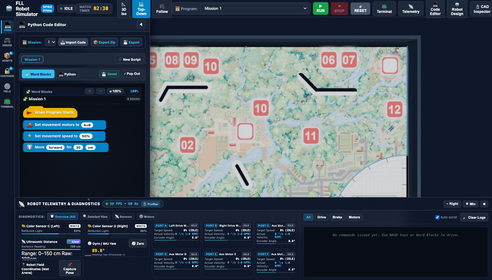
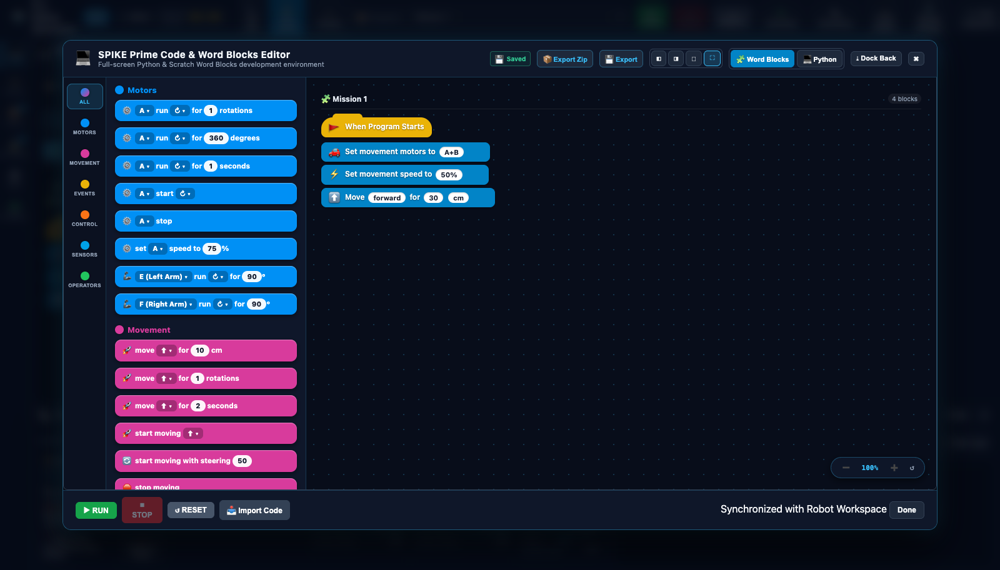

Tutorial 2: Programming with LEGO SPIKE Prime Word Blocks¶
For many FIRST LEGO League teams, the official LEGO® SPIKE™ Prime Word Blocks environment is the go-to programming language. Based on Google Blockly and Scratch 3.0, Word Blocks provides an intuitive, color-coded drag-and-drop interface that makes autonomous robotics accessible to students of all skill levels.
In this tutorial, you will explore the simulator's built-in Word Blocks Studio, build a multi-step autonomous drive and attachment mission, learn how to manage and zoom your block canvas, and export/import competition files.
🎯 Learning Objectives¶
By the end of this tutorial, you will be able to:
- Open and arrange the Word Blocks Studio in both the Collapsible Side Drawer and the Full-Screen Popout Modal.
- Navigate the 3-Column SPIKE Workspace (Category Sidebar, Block Palette Drawer, and Dotted Canvas).
- Assemble a complete 6-block autonomous mission controlling both drive motors and an auxiliary attachment motor.
- Pan, zoom, and organize multi-step block stacks on the canvas.
- Save your work with built-in Autosave, export projects as
.zipbundles, and import official LEGO.llsp3project files. - Solve Hands-On Challenge 2 by creating a simulated Coral Reef mission run.
🖥️ Step 1: Opening the Word Blocks Studio (Drawer vs. Popout Modal)¶
fll-sim offers two flexible ways to work with Word Blocks:
1. The Collapsible Side Drawer View¶
Click the 💻 Code button on the far-left Activity Bar. The side drawer expands on the left, displaying your block stack right alongside the 3D competition table:

- Best For: Rapid tweaking and quick testing where you want to watch the robot drive in the 3D viewport while seeing the active block highlights.
2. The Full-Screen Popout Modal¶
When building complex, multi-step programs with dozens of blocks, you need maximum screen real estate. Click either: * The 💻 Code Editor button in the top navigation bar, OR * The ⤢ Pop Out button located in the drawer header.

- Window Pinning Controls (Top Right of Modal):
⛶Maximize (Full-Screen): Expands the Studio across your entire monitor.◧Pin Left: Snaps the block canvas to the left half of the screen, leaving the right half open for the 3D field.◨Pin Right: Snaps the block canvas to the right half of the screen.🗗Float: Turns the editor into a draggable, resizable floating window.⤓ Dock Back: Collapses the modal back into the side drawer.
🧩 Step 2: Navigating the 3-Column SPIKE Workspace¶
The simulator faithfully replicates the 3-column architecture of the official LEGO SPIKE App:
┌─────────────────┬──────────────────────┬─────────────────────────────────────┐
│ 1. CATEGORY BAR │ 2. PALETTE DRAWER │ 3. CANVAS VIEWPORT │
│ │ │ │
│ ● All │ [When Program Starts] [when program starts] │
│ ● Motors │ [Move Forward 10cm] │ │ │
│ ● Movement │ [Set Speed to 50%] │ ▼ │
│ ● Events │ [Motor E Run 90°] │ [set movement motors to A+B] │
│ ● Control │ ... │ │ │
│ ● Sensors │ │ ▼ │
│ ● Operators │ │ [move forward for 35 cm] │
└─────────────────┴──────────────────────┴─────────────────────────────────────┘
1. Category Sidebar (Far Left)¶
Color-coded icons that filter available blocks by functional robotics subsystem:
* Motors (Blue): Single-motor commands for attachments on Ports C, D, E, and F (run for degrees, seconds, speed).
* Movement (Pink): Synchronized differential drive base commands for Ports A+B (move forward, backward, tank turns, steering).
* Events (Yellow): Program initiation triggers (when program starts, broadcast messages).
* Control (Orange): Execution flow (wait 1 seconds, repeat 10, forever, if...then...else).
* Sensors (Cyan): Optical color sensor, ultrasonic distance, and Hub IMU gyro readings.
* Operators (Green): Mathematical math blocks (\(+\), \(-\), \(\times\), \(\div\), comparisons, random numbers).
2. Block Palette Drawer (Center)¶
Displays the library of available blocks for the selected category. You can drag any block from this drawer directly into your canvas.
3. Canvas Viewport (Right)¶
An infinite dotted-grid workspace where you assemble your code. Blocks automatically snap together with an audible and visual click when brought close to a compatible connector notch.
🚀 Step 3: Creating a Precision Drive & Attachment Mission¶
Let's build a competition mission that drives our robot forward out of the Red Arc, activates an attachment mechanism to interact with a mission model, and then backs up safely to Home Base.
flowchart TD
Start["🟡 when program starts"] --> Motors["🌸 set movement motors to A+B"]
Motors --> Speed["🌸 set movement speed to 50%"]
Speed --> DriveOut["🌸 move forward for 35 cm"]
DriveOut --> Lever["🔵 motor E run clockwise for 90 degrees"]
Lever --> Return["🌸 move backward for 35 cm"]Assemble the 6 Core Blocks:¶
when program starts(Events - Yellow):- Every FLL program begins with this hat block. It acts as the execution entry point when you press
▶ RUN.
- Every FLL program begins with this hat block. It acts as the execution entry point when you press
set movement motors to [A + B](Movement - Pink):- Tells the virtual SPIKE Hub which motor ports drive the left and right wheels. By default, the Advanced Driving Base uses Port A for the left wheel and Port B for the right wheel.
set movement speed to [50] %(Movement - Pink):- Configures the cruising velocity. Running at \(50\%\) provides the optimal balance of speed and mechanical stability on the competition mat.
move [forward] for [35] [cm](Movement - Pink):- The simulator's kinematic model calculates the exact rotational degrees needed for the 56 mm rubber wheels to travel 35 cm: $\(\text{Rotations} = \frac{\text{Distance}}{\pi \times \text{Diameter}} = \frac{35\,\text{cm}}{\pi \times 5.6\,\text{cm}} \approx 1.989\,\text{rotations} \approx 716^\circ\)$
motor [E] run [clockwise] for [90] [degrees](Motors - Blue):- Activates the auxiliary motor connected to Port E. This turns your attachment lever by exactly a quarter rotation (\(90^\circ\)), lifting or pressing the mission model.
move [backward] for [35] [cm](Movement - Pink):- Reverses the drive motors, bringing your robot back behind the Home Arc perimeter line.
Running the Mission:¶
- Click ▶ RUN at the bottom of the editor (or in the top bar).
- Watch the 3D viewport:
- The robot accelerates smoothly out of the Red Arc.
- At 35 cm, the drive motors brake.
- Motor E rotates its output shaft by \(90^\circ\).
- The robot reverses 35 cm directly back to the starting line!
🔍 Step 4: Zooming and Organizing Canvas Blocks¶
As your team develops multiple runs for different missions, your canvas will grow. fll-sim includes full pan and zoom navigation:
- Mouse Wheel: Scroll up to zoom in, scroll down to zoom out.
- Canvas Panning: Click and drag any empty area of the dotted canvas background to pan smoothly across your workspace.
- Floating Zoom Controls (Bottom-Right of Canvas):
➕Button: Zooms in by \(15\%\).➖Button: Zooms out by \(15\%\).↺ 100%Button: Instantly resets magnification to \(100\%\) and centers the active block stack.- Zoom Badge: Displays current magnification (\(50\% \text{ to } 200\%\)).
Judging Tip: Clean Canvas & Code Comments
FLL Robot Design judges love clean code! Keep separate mission runs organized in clear columns across your canvas. Right-click any block to add an explanatory comment (e.g., "Mission 1: Coral Reef push and lever release"). Judges will award high marks for well-documented software engineering!
💾 Step 5: Autosave, Exporting Scripts, and Importing .llsp3 Files¶
Never lose team progress! The simulator includes a multi-tier persistence engine:
1. Instant Autosave¶
Notice the 💾 Saved green status indicator in the editor toolbar. Every change you make—dragging a block, editing a parameter value, or creating a new tab—is immediately saved to your browser's persistent local storage. If you accidentally close your browser tab, your complete program will be restored the moment you return!
2. Exporting Single Scripts and ZIP Archives¶
💾 Export: Downloads the currently active script as a standalone.pyPython file.📦 Export Zip: Bundles all active scripts, word blocks configurations, and custom missions into a single timestamped.ziparchive.- Coach Recommended Workflow: Have your team's software lead click
📦 Export Zipat the end of every team meeting and upload the archive to Google Drive or GitHub.
- Coach Recommended Workflow: Have your team's software lead click
3. Importing Existing Team Files¶
Click 📥 Import Code to upload:
* Official LEGO SPIKE App v3 projects (.llsp3)
* Legacy SPIKE App v2 projects (.llsp)
* Scratch 3.0 projects (.sb3)
* Standard Python scripts (.py)
The simulator's built-in spike-scratch-importer parses the JSON AST inside the .llsp3 ZIP container and instantly recreates the visual blocks on your canvas!
🏆 Hands-On Challenge 2: The Coral Reef Lift & Return Mission¶
Put your Word Blocks skills into practice with a realistic season challenge!
Challenge Prompt:¶
Scenario: The robot must leave the Red Launch Arc, navigate \(42.0\,\text{cm}\) across the field, stop in front of the coral nursery, lower an attachment arm on Port E by \(120^\circ\) to hook the coral branch, wait \(0.5\) seconds for physics stabilization, lift the coral branch by \(120^\circ\) counter-clockwise, and finally drive backward \(42.0\,\text{cm}\) into Home Base.
Requirements: 1. Set movement speed to \(45\%\). 2. Ensure motor E stops with brake mode enabled. 3. Use an orange
waitblock between lowering and lifting to allow physical contact settling. 4. Verify in the Telemetry Dock that the robot returns within \(0.5\,\text{cm}\) of the start line.
Challenge 2 Solution¶
from spike import MotorPair, Motor
from spike.control import wait_for_seconds
# Initialize Drive Base and Attachment Motor E
motors = MotorPair('A', 'B')
motor_e = Motor('E')
# Configure cruising speed
motors.set_default_speed(45)
print("Step 1: Driving 42 cm to Coral Reef...")
motors.move(42, 'cm')
print("Step 2: Lowering attachment arm 120 degrees...")
motor_e.run_for_degrees(120, speed=30)
# Allow Rapier 3D physics settling
wait_for_seconds(0.5)
print("Step 3: Lifting coral branch 120 degrees...")
motor_e.run_for_degrees(-120, speed=30)
print("Step 4: Returning to Home Base...")
motors.move(-42, 'cm')
print("Mission Complete!")
Why Include a 0.5-Second Wait Block?¶
In physical robotics, momentum and elastic rebound occur when Technic beams impact plastic mission elements. Pausing for \(0.5\) seconds lets vibrations dissipate and allows the attachment teeth to seat securely before reversing direction. This simple habit prevents dropped mission elements on the competition field!
⏭️ Next Step¶
Ready to level up to text-based coding? Proceed to Tutorial 3: Authentic SPIKE Python Programming & Autonomous Navigation → to learn gyro pivot turns, proportional line tracking, and sensor squaring algorithms!